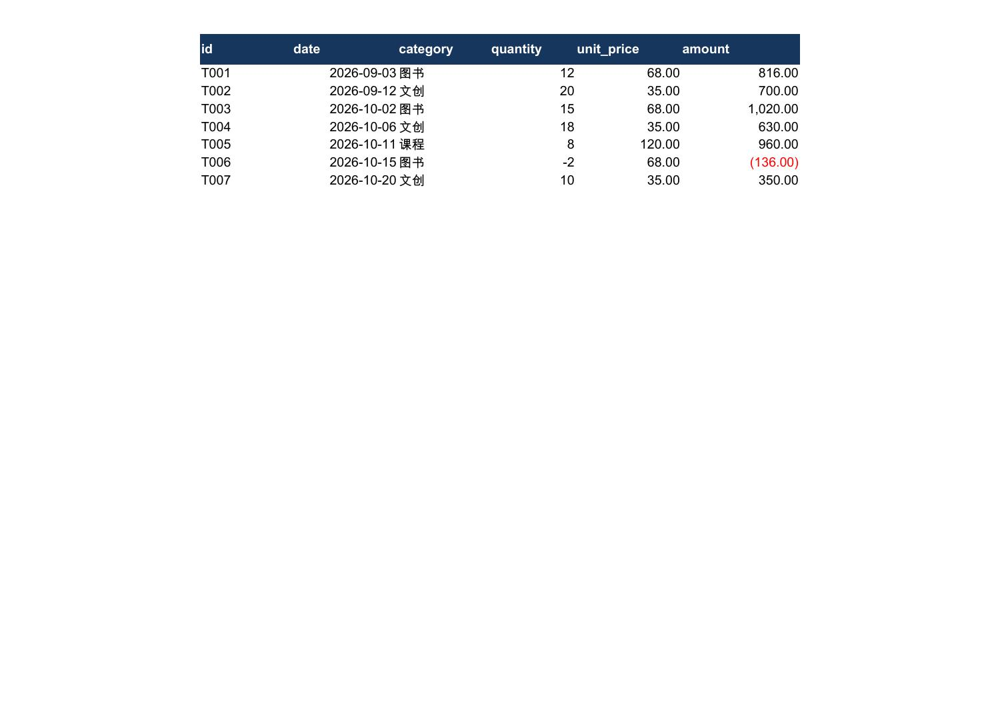

← 返回 Skill 详情semifly · 本地真实运行记录 · 2026-11-17 · 虚构测试材料
11 个公式约 1.4 秒重算，保留原表格与图表
本地适配后重算通过原宏调用在本机超时；新增本地适配器，先清除临时副本的旧缓存并用 LibreOffice 计算，再由原 Skill 写回公式缓存。基准、带旧缓存改价、重复执行、除零与超时保护均已实际测试。
- 11 个公式、0 错误；9 月 1,516、10 月 2,824、合计 4,340
- 保留旧缓存改价 68→70 后，9 月 1,540、合计 4,364
- 公式文本及图表、样式等非工作表部件未改变；重复重算无变化
- 除零错误如实报告；强制超时返回失败且输入文件不变
这是固定版本的本站本地适配，原作者脚本本身未修改，直接运行原脚本仍可能超时。只验证所列 XLSX 样本与故障分支，未在微软 Excel 客户端验收。
真实生成文件经 LibreOffice 渲染后的预览页截图；不是 Microsoft Office 客户端截图。 未验证 OneAPI 模型组合。
 实际产物 · 1 / 3
实际产物 · 1 / 3
实际产物 · 2 / 3 实际产物 · 3 / 3
实际产物 · 3 / 3